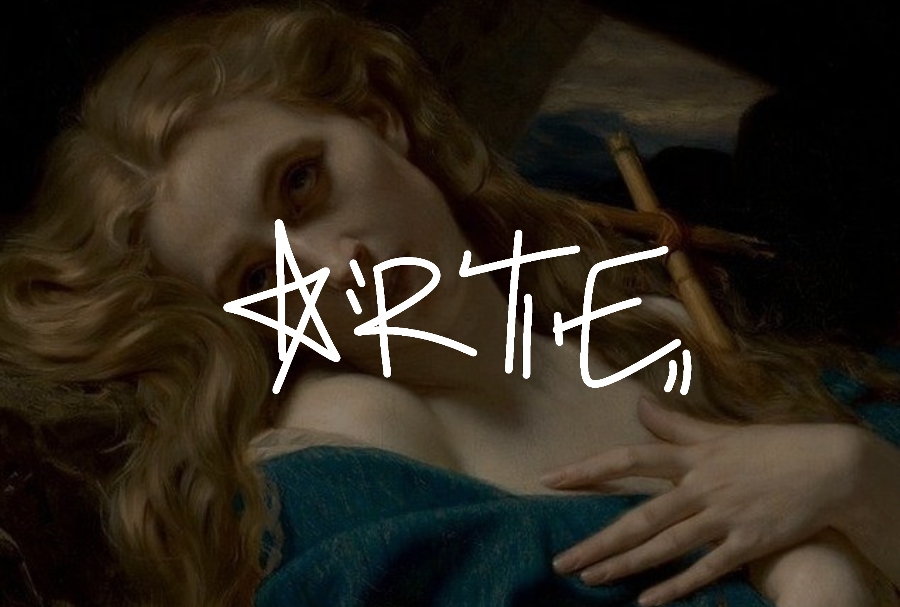
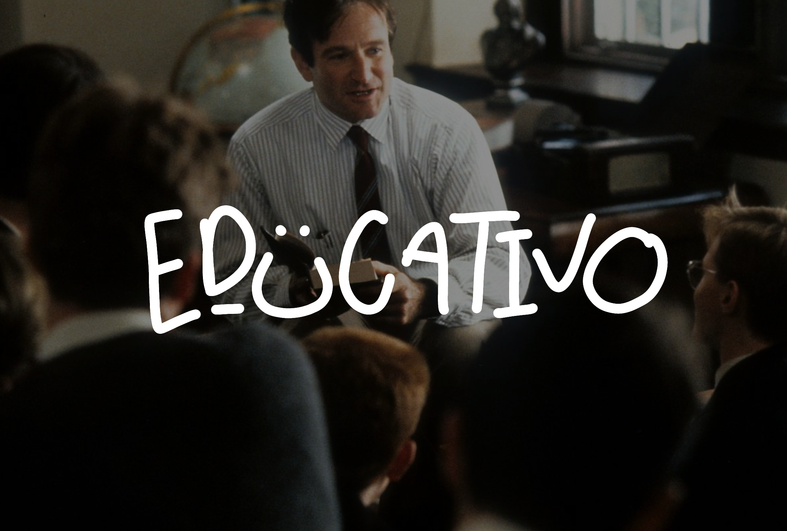

IMPACTO: ARTE
Según sostiene la artista e investigadora Mingyong Cheng en su trabajo The Creativity of Artificial Intelligence in Art (2022), la revolución tecnológica de la inteligencia artificial en el ámbito creativo del arte y el diseño ofrece una perspectiva tan beneficiosa como prolífica para la concepción y ejecución de proyectos. La cooperación de la inteligencia artificial con las habilidades humanas abre las puertas a la creación y experimentación de novedosos conceptos. Pues, más allá del boom de la inteligencia artificial que crea imágenes en redes sociales y medios digitales, también existe un enorme potencial para usar estas tecnologías en la optimización de procesos creativos. Así, artistas y diseñadores pueden lograr mayor eficiencia y libertad en sus desarrollos artísticos, delegando a la inteligencia artificial tareas mecánicas o de orden secundario, priorizando la parte humana en la esencia de la creación. En general, la colaboración entre humanos y máquinas en la creación de arte puede ser vista como una forma de «inteligencia colectiva», en la que los puntos fuertes y habilidades de cada uno se combinan para crear algo que ninguno podría lograr por sí solo.
La IA puede aportar habilidades técnicas específicas, como la capacidad de procesar grandes cantidades de datos o la capacidad de generar patrones complejos, mientras que los seres humanos aportan habilidades creativas y estéticas, así como su capacidad para entender el contexto y la intención del arte. La colaboración también puede ser vista como una forma de ampliar las posibilidades creativas y de aumentar la accesibilidad del arte, ya que la IA puede permitir a los artistas crear obras de arte personalizadas, interactivas y generativas que no habrían sido posibles de otra manera. Sin embargo, la colaboración entre humanos y máquinas también puede plantear preguntas éticas y conceptuales sobre la autoría y la originalidad del arte, ya que las obras de arte generadas por la IA pueden ser vistas como el resultado de una colaboración entre el artista y la tecnología. Además, la utilización de la IA en la creación de arte también puede plantear preguntas sobre el papel del artista en la sociedad y sobre el impacto de la tecnología en la cultura y en la identidad humana.

IMPACTO: EDUCACIÓN
En la actualidad, la inteligencia artificial con más presencia en el ámbito cotidiano de los jóvenes es Chat GPT, teniendo está un gran impacto en la sociedad del presente. AlAfnan,M.A. et al. (2023) nos habla del como esta inteligencia artificial provee, tanto a estudiantes como a docentes, una herramienta que da la suficiente información sin la necesidad de pasar por una larga lista de páginas en las cuales tienes que cuestionar la credibilidad y fiabilidad de lo que estas leyendo (p. 65). Tener una herramienta tan poderosa como lo es Chat GPT en un dispositivo que cabe en tu bolsillo al final termina volviéndose en una forma de facilitar la vida. Con las nuevas tecnologías, es innegable pensar en que los roles de docencia necesitan adaptarse a la situación actual de los estudiantes. Según Lion,C. et al. (2024), “no solo en profundizar el contenido entregado, sino que centrarse en aquello que la IA no realizará: formando a los/as alumnos/as en la capacidad para liderar equipos, en la empatía, en inspirar confianza y comportarse de manera ética y sustentable” (pp.17 y 18). Con esto podemos notar que la importancia del docente no es solo en el ámbito educativo, si no que su presencia frente al aula es en relación con algo mucho más humano, la empatía y las emociones.
IMPACTO: MORAL
En el ámbito ético, se ha investigado ampliamente los principios que deben guiar el desarrollo y la implementación de la inteligencia artificial, principios que incluyen la transparencia, la responsabilidad, la equidad y el respeto a los derechos fundamentales de las personas. Por otro lado, la privacidad de los datos se ha convertido en una preocupación fundamental al aplicar la inteligencia artificial en diversos campos, como la salud, el proceso penal y el sector público. La recopilación masiva de datos y su análisis automatizado plantean preguntas en relación con el consentimiento informado, la anonimización de los datos y la posibilidad de discriminación algorítmica. Igualmente, se ha debatido la necesidad de establecer un marco ético y legal que regule el uso de la inteligencia artificial.
En definitiva, la inteligencia artificial tiene un impacto significativo en la ética y la privacidad de los datos, por lo que, para garantizar un desarrollo responsable y respetuoso de esta tecnología, es necesario reflexionar éticamente y establecer regulaciones legales adecuadas, esto implica la adopción de principios éticos sólidos, la promoción de la transparencia, la responsabilidad en el uso de la inteligencia artificial, y la protección de la privacidad de los datos de las personas.